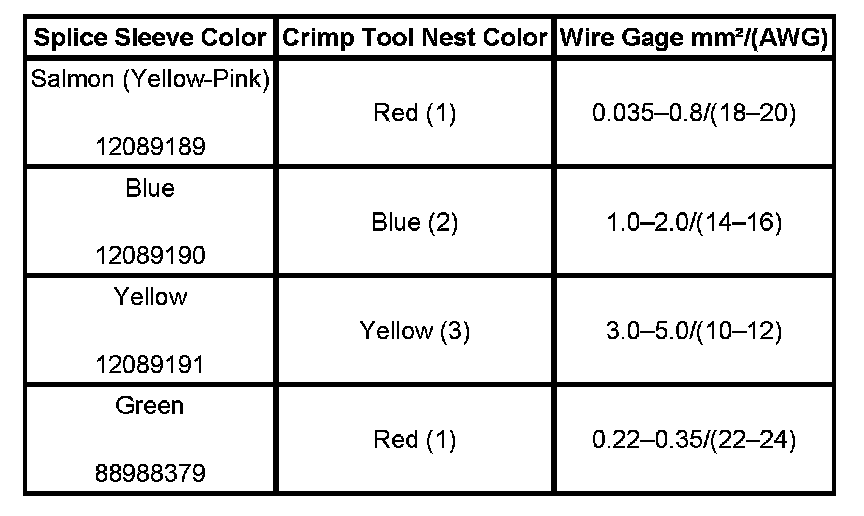
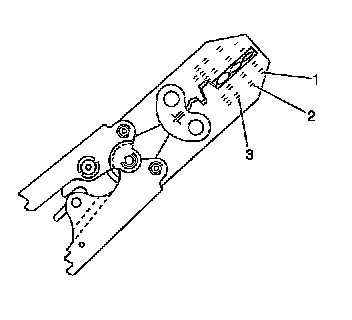
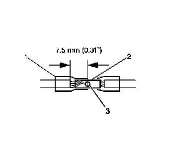
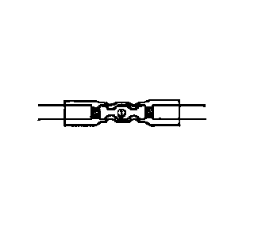
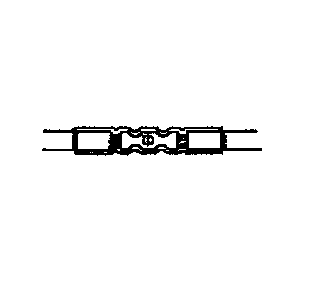

GMLAN Wiring Repairs
GMLAN WIRING REPAIRS
TOOLS REQUIRED
J-38125 Terminal Repair Kit
The GM Local Area Network (GMLAN) System requires special wiring repair procedures due to the sensitive nature of the circuitry. Follow the specific procedures and instructions when working on GMLAN connectors and terminals.
The tool kit J-38125 contains the following items in order to repair the GMLAN wiring:
- DuraSeal splice sleeves
- A wire stripping tool
- J 38125-8 Crimping Tool (GM P/N 12085115)
- J 38125-5 Ultra Torch Special Tool (GM P/N 12085116)
The DuraSeal splice sleeves have the following 2 critical features:
- A special heat shrink sleeve environmentally seals the splice. The heat shrink sleeve contains a sealing adhesive inside.
- A cross hatched (knurled) core crimp provides necessary contact integrity for the sensitive, low energy circuits.
The J-38125 also serves as a generic terminal repair kit. The kit contains the following items:
- A large sampling of common electrical terminals
- The correct tools in order to attach the terminals to the wires
- The correct tools in order to remove the terminals from the connectors
GMLAN REPAIRS
IMPORTANT: When making a repair to any GMLAN network, the original wire length after the repair must be the same length as before the repair. If the network is a twisted pair, the twist must be maintained after the repair is completed.
GMLAN has 2 types of networks, low speed and high speed. Low speed GMLAN has a single wire and works at slow speeds. High speed GMLAN has 2 wires in a twisted pair and works at higher speeds. For more information on GMLAN, refer to Data Link Communications Description and Operation.
GMLAN CONNECTOR TERMINAL REPAIR
IMPORTANT: A service terminal can be used to replace damaged connector terminals for both high speed and low speed GMLAN systems. When making a connector terminal repair on a GMLAN high speed system with twisted pair wires, do not untwist the wires more than necessary to make the repair.
The terminals in the GMLAN system are made of a special metal. This metal provides the necessary contact integrity for the sensitive, low energy circuits. These terminals are available in the J-38125. If the individual terminals are damaged on any GMLAN connection, use the appropriate connector repair procedure in order to repair the terminal.
GMLAN WIRE REPAIR
IMPORTANT: Refer to Wiring Repairs in order to determine the correct wire size for the circuit you are repairing. You must obtain this information in order to ensure circuit integrity.

If a wire is damaged, repair the wire by splicing in a new section of wire of the same gage size (0.5 mm, 0.8 mm, 1.0 mm, etc.). Use the DuraSeal splice sleeves and splice crimping tool from the J-38125. Use the following wiring repair procedures in order to ensure the integrity of the sealed splice.
1. Open the harness by removing any tape:
IMPORTANT: You must perform the following procedures in the listed order. Repeat the procedure if any wire strands are damaged. You must obtain a clean strip with all of the wire strands intact.
- Use a sewing seam ripper (available from sewing supply stores) in order to cut open the harness in order to avoid wire insulation damage.
- Use the DuraSeal splice sleeves on all types of insulation except coaxial.
- Do not use the DuraSeal splice sleeve to form a splice with more than 2 wires coming together.
2. Cut as little wire off the harness as possible. You may need the extra length of wire in order to change the location of a splice.Adjust splice locations so that each splice is at least 40 mm (1.5 in) away from the other splices, harness branches, or connectors.
3. Strip the insulation:
- When adding a length of wire to the existing harness, use the same size wire as the original wire.
- Perform one of the following items in order to find the correct wire size:
- Find the wire on the schematic and convert the metric size to the equivalent American wire gage (AWG) size.
- Use an AWG wire gage.
- If you are unsure of the wire size, begin with the largest opening in the wire stripper and work down until achieving a clean strip of the insulation.
- Strip approximately 7.5 mm (0.313 in) of insulation from each wire to be spliced.
- Do not nick or cut any of the strands. Inspect the stripped wire for nicks or cut strands.
- If the wire is damaged, repeat this procedure after removing the damaged section.
4. Select the proper DuraSeal splice sleeve according to the wire size. Refer to the above table at the beginning of the repair procedure for the color coding of the DuraSeal splice sleeves and the crimp tool nests.

5. Use the Splice Crimp Tool from the J-38125 in order to position the DuraSeal splice sleeve in the proper color nest of the Splice Crimp Tool. The crimp tool has three nests, 1 is for the salmon and green splice sleeve, 2 is for the blue splice sleeve, and 3 is for the yellow splice sleeve.

6. Place the DuraSeal splice sleeve in the nest. Ensure that the crimp falls midway between the end of the barrel and the stop. The sleeve has a stop (3) in the middle of the barrel (2) in order to prevent the wire (1) from going further. Close the hand crimper handles slightly in order to firmly hold the DuraSeal splice sleeve in the proper nest.

7. Insert the wire into the splice sleeve barrel until the wire hits the barrel stop.
8. Tightly close the handles of the crimp tool until the crimper handles open when released.The crimper handles will not open until you apply the proper amount of pressure to the splice sleeve. Repeat steps 4 and 5 for the opposite end of the splice.

9. Using the heat torch, apply heat to the crimped area of the barrel.
10. Start in the middle and gradually move the heat barrel to the open ends of the tubing:
- The tubing will shrink completely as the heat is moved along the insulation.
- A small amount of sealant will come out of the end of the tubing when sufficient shrinkage is achieved.